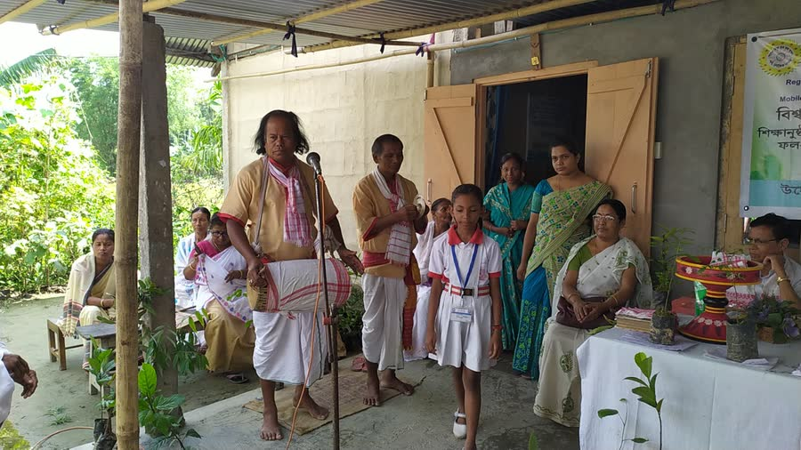

কলা-সংস্কৃতি আৰু আধ্যাত্মিক বিকাশArt, Culture & Spiritual Growth
Promoting Assamese art and culture through exhibitions, publications and spiritual practice — nurturing a society built on disciplined, ethical living.
কলা-সংস্কৃতি চৰ্চা, প্ৰচাৰ আৰু প্ৰসাৰৰ উদ্দেশ্যে প্ৰস্তুত কৰা আঁচনি ৰূপায়ণ কৰা হ’ব। অসমৰ কলা-সংস্কৃতি ৰাষ্ট্ৰীয় আৰু আন্তৰ্জাতিক পৰ্যায়ত প্ৰদৰ্শনৰ ব্যৱস্থা কৰা হ’ব। নৱ-প্ৰজন্মক আধ্যাত্মিক ধ্যান-ধাৰণাৰে পুষ্ট কৰি তুলিবলৈ গ্ৰন্থ, আলোচনী আৰু পুথি প্ৰকাশ কৰা হ’ব।
